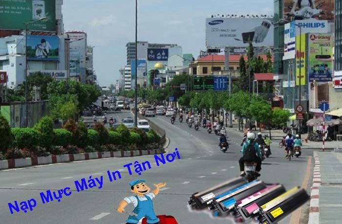
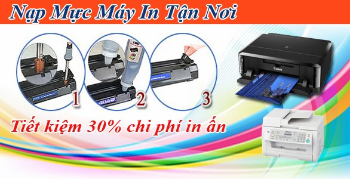

Nạp mực máy in đường NGUYỄN VĂN TRỖI ► Phú Nhuận 24/7
Chuyên: Nạp MỰc Máy In Quận Phú Nhuận.
Chuyên : nạp mực máy in tận nơi quận phú nhuận, bơm mực máy in Hp - Canon - Brother - Samsung - Panasonic. Thay mực laser màu, đổ mực in phun epson, canon, hp ...
bơm mực máy in giá rẻ đường nguyễn văn trỗi
Công ty TNHH Tin Học Hi-Tech
80/1 Duy Tân, P. 15, Q. Phú Nhuận.
ĐT: 089 886 9964 - Zalo: 0934 39 3550
Dịch Vụ Bơm Mực Máy In Tận Nơi
- Nạp mực máy in Laser trắng đen: Hp - Canon - Brother - Samsung - Panasonic ...
- Thay mực máy in Laser màu: Hp cp 1025, Hp 176, Hp 177, HP m 252, M254, ...
- Bơm mực màu máy in phu: epson, hp, canon, brother.
- Dịch vụ nạp mực máy in tận nơi giá rẻ tại đường Nguyễn Văn Trỗi
- Hỗ trợ - Tư vấn miễn phí mực in - máy in qua Zalo 0934 39 35 50
- Dịch vụ sửa máy in tại nhà nhanh nhất
Quy trình đổ mực in tại nhà tại cơ quan doanh nghiệp của Vinh Tín Computer
Bước 1 : Kiểm tra tình trạng máy .
Bước 2 :Tham khảo ý kiến của khách hàng và tư vấn cho khách hàng thay thế nếu linh kiện máy in của khách hàng bị hỏng.
Bước 3 : Lựa chọn mực in chính hãng phù hợp với máy in.
Bước 4 : Tháo rời linh kiện ,vệ sinh máy in sạch sẽ , đổ mực thừa ==> Đổ mực in.
Bước 5 : Lắp đặt đầy đủ các bộ phận.
Bước 6 : Kiểm tra kết quả, test thử trước khi bàn giao.
Bước 7 : Ký xác nhận, đóng góp ý kiến của khách hàng về dịch vụ Đổ mực máy in tại nhà Đà Nẵng của Vinh Tín Computer
Chất lượng bản in sau khi đổ mực máy in tại quận phú nhuận
- Tuyệt đối không làm lem mực khi in
- Đảm bảo bản in sắc nét
- Số lượng bản in tương đương với hộp mực chính hãng
- Chúng tôi đảm bảo an toàn cho máy in cũng như chế độ bảo hành của máy in
- Không làm rơi mực ra máy in để ảnh hưởng đến tuổi thọ của máy
- Tiết kiệm tối đa chi phí, thời gian cho quý khách hàng
- Chúng tôi luôn sẵn linh kiện thay thế như trống, gạt, trục cao áp, trục từ, chíp hộp mực để thay thế các linh kiện cũ hỏng nhằm tiết kiệm chi phí tối đa cho khách hàng
- Với 7 quy trình như trên, chắc chắn cho bản in sắc đẹp, tăng tuổi thọ của máy in, quý khách hoàn toàn có thể tin tưởng do muc may in tai da nang của chúng tôi.
- nạp mực in giá rẻ quận phú nhuận
Bảng Giá Nạp Mực Máy In Tận Nơi Quận Phú nhuận
Khi cần đổ mực máy in gấp tại quận phú nhuận thì hãy alo cho chúng tôi
Với đội ngũ kỹ thuật viên nhiều năm kinh nghiệm: luôn túc trực tại các quận huyện Tphcm, kỹ thuật viên có mặt nhanh nhất tại quận phú nhuận, chỉ 20' sau khi nhận được yêu cầu nạp mực in tại quận phú nhuận của quý khách hàng. Hỗ trợ công nợ, xuất hóa đơn VAT, Dịch vụ đổ mực in tận nơi 24/7
Đổ mực in cho máy in như thế nào ? dùng loại mực gì cho đúng?
Trong quá trình đổ mực in có rất nhiều kĩ thuật nhầm lẫn gây tra tình trạng sau khi đổ mực vào dẫn đến bản in bị lem, sọc, hoặc bị mờ. Một trong những nguyên nhân gây ra tình trạng đó là đổ sai mực.
Phân biệt các loại mực máy in laser đen trắng
Mực in có từ : thường dùng chung cho máy in laser HP , Canon và một số dòng máy in laser đặc biệt khác
Mực in không có từ : Thường dùng cho máy in Samsung, Brother, Panasonic, Ricoh …
Theo quan niệm chủ quan của kỹ thuật thì như sau :
Dưới đây là những quy ước của kỹ thuật khi đổ mực để dễ phân biệt tuy nó không hoàn toàn đúng cho mọi trường hợp nhưng nó cũng đúng 90% cho các dòng máy in trên thị trường hiện nay.
Đổ mực máy in Canon – Hp: dùng mực có từ ( dùng chung cho nhau luôn ) ( giá thành rẻ dễ đổ mực. giá thành thị trường khi nạp mực các dòng này là 80-100 ngàn tùy dòng
Đổ mực máy in Ricoh tại đà nẵng cho các dòng máy in laser A4, in đa chức năng
Đổ mực máy in Brother – Panasonic : Dùng chung mực với nhau ( mực không từ nhưng không dùng cho Samsung – Xerox)
Đổ mực máy in Xerox : Dùng cùng 1 loại mực không từ ( không đổ được cho Brother – Panasonic )
Lựa chọn mực in như thế nào cho đúng?
Nhưng trong thực tế quan niệm trên không hoàn toàn đúng! tại sao vậy ? Một số trường hợp đã đổ đúng mực dùng cho xerox hoặc brother nhưng bản in vẫn bị đen nền từ trên xuống dưới đều hết trang giấy. Nguyên nhân ở đây chính là đổ sai mực.
Ví dụ 1 : Máy in Panasonic KX-MB1900 đa chức năng nếu theo cách nghĩ trên chúng ta sẽ đổ mực dùng chung cho brother và panasonic. Sau khi đổ xong thì bản in chắc chắn sẽ bị đen xì từ đầu đến cuối, tại sao vậy ? máy hỏng?… Chúng ta đã đổ nhầm mực ! Nếu đổ mực dùng cho Samsung & Xerox cho máy Panasonic KX-MB1900 thì bản in sẽ không bao giờ bị đen.
Ví dụ 2 : Máy in Xerox 2065 khi đổ mực dùng cho Xerox & Samsung vào thì in gia tờ giấy đen xì mặc dù trước đó bản in không bị sao, chỉ đơn thuần hết mực. Nguyên nhân cũng chính là đổ sai loại mực, nếu đúng thì phải đổ mực dùng chung cho Canon – HP vào máy xerox 2065 thì mới ok. Đúng là rất khó phân biệt phải không nào.
Ví dụ 3 : Máy in xerox P225, P265, M225, M265 và P115, M115 sau khi đổ mực bị đen toàn trang giấy. Đây là seri máy mới nhất của xerox được mua công nghệ từ brother nên sẽ có những đặc điểm chung với máy in brother như : Hộp mực, cụm trống, Reset mực, Reset trống….Có rất nhiều kỹ thuật có hỏi rằng : ” tôi đã đổ đúng loại mực dùng cho Xerox và Reset mực máy in xerox P225, P265, M225, M265 và P115, M115 đúng như hướng dẫn nhưng máy in vẫn bị đen toàn trang sau khi đổ mực.” Lựa chọn mực in như thế nào cho đúng?
Chúng tôi có tư vấn rằng :” Mực xerox – samsung không thể đổ được cho seri máy này , Phải dùng mực brother thì mới được. Có vậy thôi nhưng nhiều kỹ thuật viên vẫn mắc phải lỗi trên, ra cửa hàng bán mực in mua chai mực trên nhãn có ghi dùng cho xerox, samsung…đổ vào bị đen toàn trang in.”
Vậy Có cách nào để giảm đi sự nhầm lẫn ! đổ nhầm mực, đổ sai mực, đổ không đúng loại mực ? Một câu hỏi mà rất nhiều kỹ thuật mới vào nghề cần lời giải đáp hoặc dành cho những ai yêu khoa học muốn tự đổ mực cho chiếc máy in của nhà mình, hãy cùng chúng tôi tìm lời giải đáp nhé.


Để không đổ nhầm mực máy in – Khắc phục lỗi Bản in bị đen sau khi đổ mực
Dựa màu sắc của Trống in ( Drum ) : Nhiều KTV nói rằng trống máy in toàn là màu xanh và màu tím thế thì làm sao mà phân biệt được, thực ra nó có điểm khác nhau để phân biệt. đơn giản nhất đó là loại màu xanh thì đổ mực nào, loại màu tím thì đổ mực gì? nhưng vẫn chưa đủ đâu nhé phải kết hợp tất cả các cách bên dưới đây nữa.
Dựa vào tên máy in : cách này quyết định đến 90% là không đổ nhầm mực, kể cả các kỹ thuật mới đi làm, nhưng nó cũng là nguyên nhân gây ra sự nhầm lẫn không đáng có ! Máy in Canon – HP , Samsung – Xerox, Brother – Panasonic mỗi cặp một loại mưc khác nhau. vậy Lựa chọn mực in như thế nào cho đúng?
Dựa vào chủng loại mực : phân biệt giữa mực có từ và mực không có từ, mực có từ dùng tua-vit có nam châm có thể hút được, mực không có từ thì tua-vit không hút được. hoặc xem trục từ của nó có hút mực hay hút tuavit ?
Cách thứ 3 : Để khắc phục lỗi Bản in bị đen sau khi đổ mực ta phải biết Kết hợp của 3 cách vừa nêu trên và dựa vào kinh nghiệm đã từng đổ sai mực một vài lần, Khi gặp phải một máy in đầu tiên xác định xem tên máy là gì, dùng mực có từ hay không có từ, màu sắc của trống là xanh hay tím để loại trừ và chọn ra loại mực phù hợp nhất.
Ví dụ : Máy in Xerox M115 bị đen toàn bộ bản in khi đổ sai mực .Trước khi đổ mực chúng ta để ý hộp mực của máy in rất giống với hộp mực của dòng máy in Brother ( dùng mực không từ ) như vậy không thể đổ mực có từ vào đây đc. Nhưng dùng mực Xerox hay mực Brother để đổ bây giờ, Để ý thấy màu sắc của trống là màu tím nên không thể đổ mực Xerox vào được mà phải đổ mực dùng cho Brother vào nhé ! Nếu không tin bạn cứ thử đổ mực Xerox vào thì biêt ngay.
Tương tự : Với máy in Xerox 2065 thì hộp mực có trục từ hút được mực có từ nên phải đổ mực HP, Canon. Còn máy in Panasonic KX-MB1900 không đổ mực Panasonic – Brother mà phải đổ mực Samsung – Xerox vì trống của nó có màu xanh và dùng mực không từ ????
Quá trình đổ mực in khiến máy in bị nhòe mực sau đây là một số nguyên nhân cơ bản
- Do giấy in quá mỏng, giấy in bị ẩm, vì vậy quý khách cần kiểm tra giấy in đã đủ tiêu chuẩn chưa, đảm bảo đủ độ dày chưa, nếu giấy quá mỏng bản in sẽ không được đẹp, quá trình đốt nóng của lô sấy khiến giấy in bị cong hoặc nhăn lại gây ra tình trạng bị kẹt giấy nữa nhé quý khách
- Do đổ mực máy in sai cách, không vệ sinh hộp mực, không đổ mực thừa, đổ không đúng loại mực
- Do drum máy in đã kém, không còn hoạt động tốt, sau 3-4 lần đổ mực quý khách nên thay drum để đảm bảo bản in rõ nét
- Do trục từ đã hư hỏng không còn từ tính , hút mực kém cũng có thể là nguyên nhân gây ra tình trạng này
- Nếu hộp mực máy in của quý khách đã quá cũ, hư hỏng quá nhiều linh kiện thì nên thay hộp mực in mới để đảm bảo tính rõ nét của bản in nhé.
Các dịch vụ khách của Tin Học Hi-Tech
- Nap mực máy in tại quận 3 :"Mực Đậm Đẹp" 24/7
- Nạp Mực Máy In Quận 5 "Mực In Đẹp" 24/7
- Nạp mực máy in quận Bình Thạnh "CỰC NHANH !!!" I miễn phí vệ sinh máy in
- Nạp Mực Máy In Quận Tân Bình: 24/7 NHANH NHẤT
- Nạp mực máy in GIÁ RẺ TP HCM - "DV 24/7" uy tín
- Bơm mực 17A cho máy in HP M102w M130A Tại HCM
- ►► Thay mực máy in hp MFP M436 tại TP HCM ◄◄ 24/7
- BẠN cần nạp mực máy in GẤP 24/7 tại HCM ? "SIÊU TỐC"
Thủ thuật máy in: